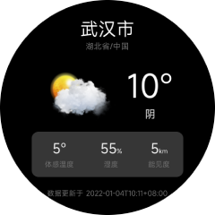

# 数据获取
在前面几个章节中，已经实现了天气预报App的UI，也添加了基本的交互。但页面中的数据 并非真实数据，接下来我们将从和风天气预报接口中请求真实数据并渲染。
# 请求接口数据
网络请求需要使用到数据请求fetch模块，
使用之前请在manifest.json中声明。
fetch模块提供了fetch()方法，详细使用方法请参考Vela文档。
每个页面都具有自己的生命周期，可以在onReady中发送请求，
代码如下：
<script>
import router from '@system.router';
import fetch from '@system.fetch';
export default {
private: {
// ...
},
onReady() {
let key = '<你的key>';
// location，这里使用的是武汉的code
// 更多的location code可以查看：https://github.com/qwd/LocationList
fetch.fetch({
url: `https://devapi.qweather.com/v7/weather/now?location=101010100&key=${key}`
}).then(res => {
const result = res.data;
console.log('返回的数据:', JSON.stringify(result.data, null, 2));
}).catch(error => {
console.log(`数据请求失败:`, error);
})
},
// ...
}
</script>
使用之前，请到和风天气开发平台中申请key，然后替换上面代码中的key。
添加上述代码并替换合法的key后，运行App，可以在控制台中看到类似下面的日志，说明请求成功。
返回的数据: {
"code": "200",
"updateTime": "2022-01-04T10:07+08:00",
"fxLink": "http://hfx.link/2ax1",
"now": {
"obsTime": "2022-01-04T09:54+08:00",
"temp": "-1",
"feelsLike": "-4",
"icon": "100",
"text": "晴",
"wind360": "45",
"windDir": "东北风",
"windScale": "2",
"windSpeed": "7",
"humidity": "55",
"precip": "0.0",
"pressure": "1029",
"vis": "15",
"cloud": "10",
"dew": "-17"
},
"refer": {
"sources": [
"QWeather",
"NMC",
"ECMWF"
],
"license": [
"no commercial use"
]
}
}
# 数据渲染
从后端请求到数据后，还需要将请求到的数据在页面上显示出来。要显示数据，只需要更改 页面数据对象上的对应数据即可：
this.weather = result.data.now;
最终页面完整的JavaScript代码如下：
<script>
import router from '@system.router';
import fetch from '@system.fetch';
export default {
private: {
city: '武汉市',
province: '湖北省',
country: '中国',
weather: {
obsTime: "12-21 09:05",
temp: "13",
feelsLike: "10",
icon: "101",
text: "多云",
humidity: "72",
vis: "16"
}
},
onReady() {
let key = '<你的key>';
// location，这里使用的是武汉的code
// 更多的location code可以查看：https://github.com/qwd/LocationList
fetch.fetch({
url: `https://devapi.qweather.com/v7/weather/now?location=101200101&key=${key}`
}).then(res => {
const result = res.data;
console.log('返回的数据:', JSON.stringify(result.data, null, 2));
this.weather = result.data.now;
}).catch(error => {
console.log(`数据请求失败:`, error);
})
},
toListPage(eve) {
console.log(eve);
if (eve.direction === 'up') {
router.push({
uri: '/pages/list'
})
}
}
}
</script>
页面运行结果：

未来3天天气预报界面的数据请求，跟实时天气页面一样，这里不再赘述。
在真实的项目中，还需要处理更多的页面细节，比如页面请求数据时添加loading状态、对日期做对应的格式化处理等。
为了给用户提供良好的体验，请严格按照设计稿编写页面结构和样式并对各种异常情况做相应的处理。